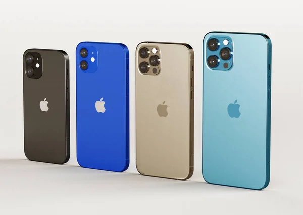

El Apple iPhone 13 Pro Max mejora a su predecesor con una tasa de
refresco de pantalla de 120Hz, el nuevo procesador Apple A15 Bionic
y mejoras en sus cámaras. Con una pantalla OLED de 6.7 pulgadas a
resolución FHD+, el iPhone 13 Pro Max está disponible con opciones
de almacenamiento de 128GB, 256GB, 512GB y 1TB. La cámara cuádruple
llega con tres lentes de 12MP y un sensor ToF 3D que integra
estabilización óptica de imagen y zoom 3x, y su cámara selfie es de
12MP. El iPhone 13 Pro Max cuenta con parlantes stereo, Face ID para
seguridad, resistencia IP68 al polvo y agua, y carga rápida e
inalámbrica.